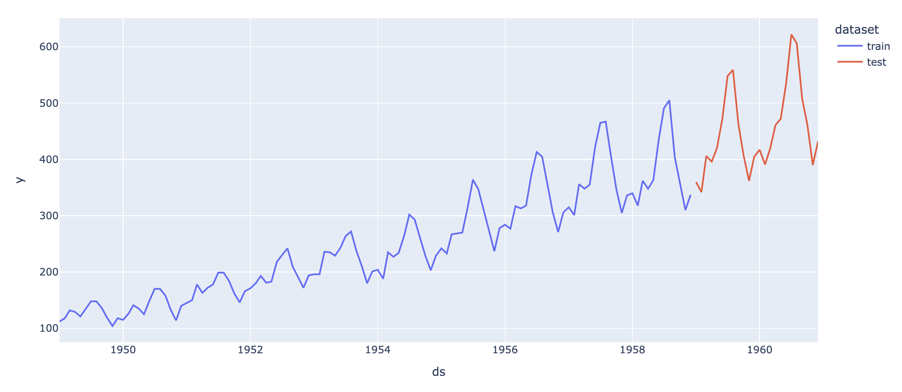
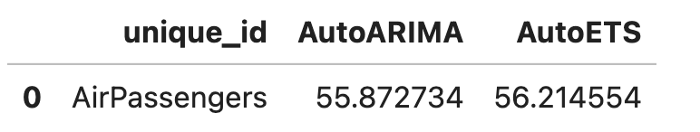

A Crash course in Time Series Forecasting from Naive to Foundational
Pietro Peterlongo, Data Scientist @ AgileLab
Agenda
- why forecasting (and nixtla)
- minimal example (and statsforecast)
- more (M5, ml, hierarchical, neural, foundational)
üëã Hi, I am Pietro ü뮂Äçüë©‚Äçüëß
- Data Scientist @ agilelab.it ‚ö™Ô∏èüîµ
- (previously) 8+ years at Software Vendor in Supply Chain
- üêçüáÆüáπ Python/PyData Milano milano.python.it
- üêô github.com/pietroppeter (üëà more socials üîó)
üé™ Come to PyCon Italy (Bologna, May 29-31)! üçù
why forecasting?
domains
- üìà sales/demand
- üîã energy consumption
- üíπ financial assets
- üå§Ô∏è weather
- …
where is the (business) value? üí∞
take better decisions! üí°
üèπ taking time seriously
time is the most important dimension
- time frequency (months, weeks, days, hours, …)
- time horizon (how many weeks in the future)?
- lag n forecast: the forecast for the n-th time bucket in the future
other dimensions (e.g. product, market, …) usually lead to forecasting multiple time series (or multivariate ones)
nixtla
methodology
- think about your why
- gather data (process, explore)
- baseline
- measure
- improve
- restart from step 4 or less
AirPassengers - data
AirPassengers - plot
split train/test
baseline
from statsforecast import StatsForecast
from statsforecast.models import Naive, HistoricAverage, WindowAverage, SeasonalNaive
models=[Naive(),HistoricAverage(), WindowAverage(window_size=12),
SeasonalNaive(season_length=12)]
sf = StatsForecast(models=models, freq="MS")
sf.fit(train_df)
predict_df = sf.predict(h=24)
sf.plot(df, predict_df)statsforecast
probabilistic forecast
Note that Nixtla provides for (almost) all its models a probablistic forecast (using levels keyword argument), either through model specific estimates or with conformal prediction (model agnostic)
cross validation

measure
M5 Forecasting competition
mlforecast
import lightgbm as lgbm
from mlforecast import MLForecast
from mlforecast.lag_transforms import ExpandingMean, RollingMean
from mlforecast.target_transforms import Differences
fcst = MLForecast(
models=[lgbm.LGBMRegressor()],
freq='D',
lags=[7, 14],
lag_transforms={
1: [ExpandingMean()],
7: [RollingMean(window_size=28)]
},
date_features=['dayofweek'],
target_transforms=[Differences([1])],
)hierarchical forecast
from datasetsforecast.hierarchical import HierarchicalData
from hierarchicalforecast.core import HierarchicalReconciliation
from hierarchicalforecast.methods import BottomUp, TopDown, MiddleOut
# Create timeseries for all levels of the hierarchy
Y_df, S, tags = HierarchicalData.load('./data', 'TourismSmall')
# ...
Y_train_df, Y_test_df = ...
# Compute base predictions
fcst = StatsForecast(models=[AutoARIMA(season_length=4), freq='QE')
Y_hat_df = fcst.forecast(df=Y_train_df, h=4)
# Reconcile the base predictions
reconcilers = [
BottomUp(),
TopDown(method='forecast_proportions'),
MiddleOut(middle_level='Country/Purpose/State',
top_down_method='forecast_proportions')
]
hrec = HierarchicalReconciliation(reconcilers=reconcilers)
Y_rec_df = hrec.reconcile(Y_hat_df=Y_hat_df, Y_df=Y_train_df, S=S, tags=tags)neural forecast
from neuralforecast import NeuralForecast
from neuralforecast.auto import AutoNHITS, AutoLSTM
# ...
horizon = len(Y_test_df)
models = [NBEATS(input_size=2 * horizon, h=horizon, max_steps=100),
NHITS(input_size=2 * horizon, h=horizon, max_steps=100)]
nf = NeuralForecast(models=models, freq='ME')
nf.fit(df=Y_train_df)
Y_hat_df = nf.predict()
plot_series(Y_df, Y_hat_df)foundational models
from nixtla import NixtlaClient
nixtla_client = NixtlaClient(api_key = nixtla_api_key)
df = pd.read_csv('https://raw.githubusercontent.com/Nixtla/transfer-learning-time-series/main/datasets/electricity-short.csv')
fcst_df = nixtla_client.forecast(df, h=24, level=[80, 90])
nixtla_client.plot(df, fcst_df, level=[80, 90])üôè Thank you for listening!

PyCon Lithuania, Vilnius, 250424